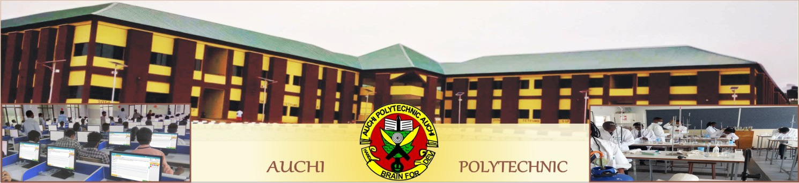

| |
|  |
AUCHI POLYTECHNI Online Application and Screening: |
Old & Returning studentSAll students can login to access the student's control panel. then follow the links below to check Result status, Class List
and Register For current Academic Session student can other facilities. |
|
Apply For 2022/23 Auchi poly HND AND post-HND Courses
|
 student login matriculation number: password: student login matriculation number: password:
i'm a new user! Sign me up |
All fresh or just admitted students for 2022/23 are required to proceed for clearance in the department.
All propective candidates, HND and ND after submitting their ONLINE APPLICATION FORMS are required to log in to the Application Control Panel and click on the link :
Admission/Application Clearance form and follow the prompts. All HND candidates who have prevousily submited their forms should log in and update the Admission/Application Clearance form.
|
Apply For 2022/23 Auchi poly post-UTME/National Diploma Courses
|
All students are required to login with their Matriculation number as username and password that was signed-up with. if you have
not done so, click on sign me up above. Ensure that you check the
Adminstrative changes
schedule and pay all required charges to be
able to access all facilities on this platform |
Applicants login to prospective student's control panel
if you submitted an online application form, login below to access prospective student's control panel. login with the username and password you already
have when you made application request. you can edit your form.check your admission status.Accept Admission and/ or Register.
Applicant Login
username:
password:
 |
Quick Links
|
2022/2023 admission
List enotice Board |
| General Entry Requirement into Auchi Polytechnic |
|
ABOUT AUCHI POLYTECHNIC
Auchi polytechnic is one of the leading polytechnic in the country,in one of the most vibrant and cosmopolitan towns in Nigeria- This polytechnic
portal presents an avenue for student to carry out normal academic transaction and processes such as view result status, checking class list,
checking and accepting admissions, registering for courses online. |
CONTACT INFORMATION
mis@auchipoly.edu.ng
Auchi-Abuja Express way, Auchi, Edo state.
|